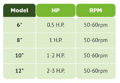

SKU: SAL-M-9
ROTARY AIRLOCK VALVE
| Sub-Category | Spices Processing |
| Material | Stainless Steel |
| Brand | Salvin |
USES OF ROTARY AIRLOCK VALVE:
Salvin Rotary airlock valve uses for discharging dry powder from
cyclone/storage silo.
About rotary air lock valve:- material is received from top in rotary air lock valve. Fill volume between rotar
vanes and discharge at bottom side.
Material is discharge without air leakage. It can be mount directly on bottom flange of silo/cyclone of out let spout.
Salvin Rotary airlock valve uses for discharging dry powder from
cyclone/storage silo.
About rotary air lock valve:- material is received from top in rotary air lock valve. Fill volume between rotar
vanes and discharge at bottom side.
Material is discharge without air leakage. It can be mount directly on bottom flange of silo/cyclone of out let spout.
Rate this product:
Click a star to submit your review